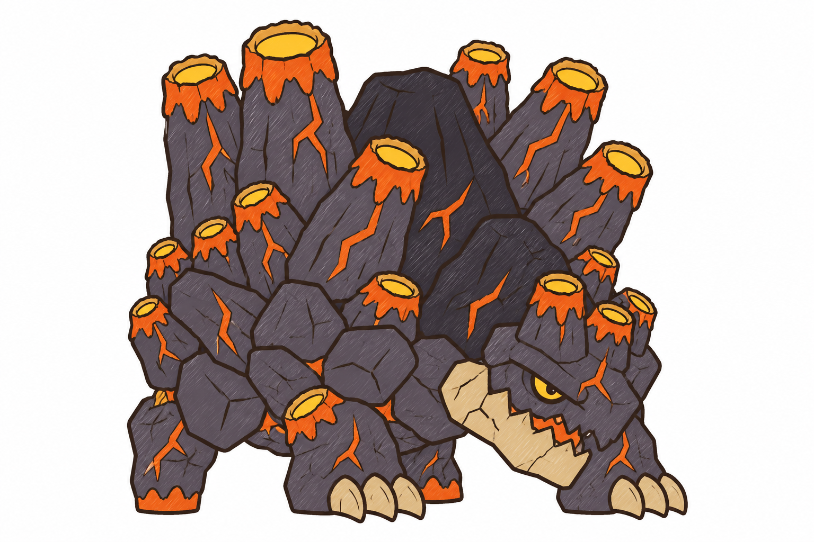
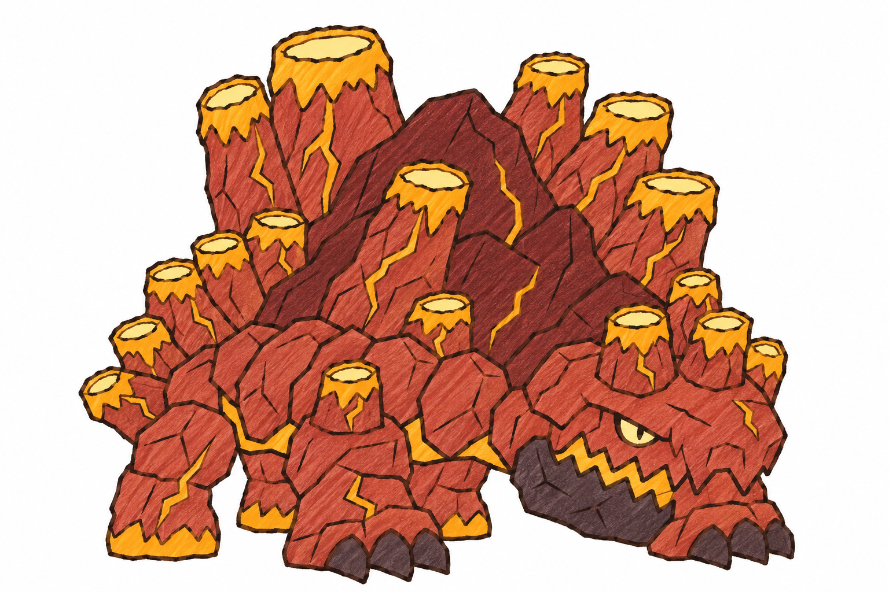
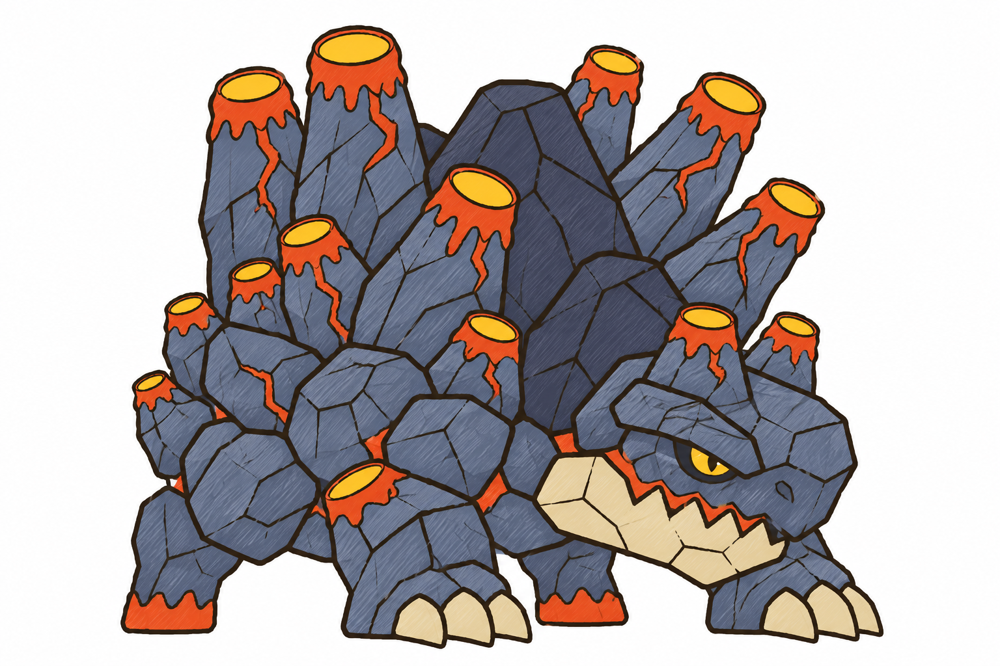

Giữ dáng của con gốc (mỗi mảnh cứng phải khớp lưới của rig): thú bốn chân thấp rộng, đầu cúi, đám ống núi lửa trên lưng. Khói, lửa không vẽ trong concept: khói ở miệng ống nằm trong rig, lửa và đạn do lớp hiệu ứng của game. Chuyển động thử (da gốc, chỉ để xem nhịp 8 clip + khói): nui_lua_1/rig_goc/xem.html


